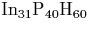

Charged species are easier to handle with clusters, since the number of electrons can be arbitrarily fixed. In a supercell an overall non-neutral charge would be infinitely repeated leading to an infinite system charge. This problem is avoided by adding an equivilent opposite uniform background charge to the supercell to maintain its charge neutrality. Such problems become worse when, for example, applying an external electric field; whereas with clusters a uniform field can be used, for a supercell it has to be a sawtooth field in order to keep the field continuous from one cell to its neighbour[46].
However, clusters also have several disadvantages. The main one of these is the potential for interaction between the cluster surface and the defect contained within. This problem is avoided when supercells are used, but instead is replaced with potential defect-defect interaction between neighbouring supercells. Finite cluster size can also constrain electron delocalisation. Hopefully defect-surface interaction should be minimised with the use of increasingly large clusters as we have access to more powerful computing facilities. Such surface effects can be seen in small polyaromatic carbon sheets used to simulate graphite, where the edge termination can impose a Kekulé structure across the sheet if it is too small. It is sometimes useful to repeat calculations in different cluster sizes to check the dependancy of the result on surface proximity. Alternatively repeating a calculation with surface hydrogen atoms held fixed and then allowed full relaxation gives an indication of surface effect depending on the degree of relaxation.
Using finite clusters increases the calculated bandgap of
semiconductor material due to the surface confinement; this works
against density functional theory which tends to decrease band
gaps![[*]](foot_motif.gif) .
.
Zinc-Blende type clusters present an additional problem over their diamond lattice equivilents, due to the different valency of the two atomic species present. If such a cluster is atom centred and radially symmetric, it will terminate with an outer shell of only one atomic species, so the cluster will be non-stoichiometric. In order to have each covalent bond fully populated it is then necessary to charge the cluster (e.g. a `neutral' 131 atom  cluster has a charge of +9 to remove the excess P electrons). The alternative is a bond centred stoichiometric cluster. Although this does not have to be artificially charged, there will be a net cluster dipole due to the non-symmetric arrangement of atoms, and this leads to anisotropy in the bonds. The effect of these two types of cluster on the core defect structure and vibrational modes can be seen in Chapter 4.
The use of clusters with a fixed electronic charge means that it is sometimes possible to obtain unphysical solutions. For example with highly delocalised states such as effective-mass type states, these are normally very delocalised in physical systems. However in a cluster approach they are forced to remain within the confines of the cluster and hence can artifically occupy anti-bonding states, etc. For problems such as the thermal donors this can be surmounted by running the defects in their ionised charge state, and the effect of localisation can be tested by then checking the structural change when the donor electrons are added once more.